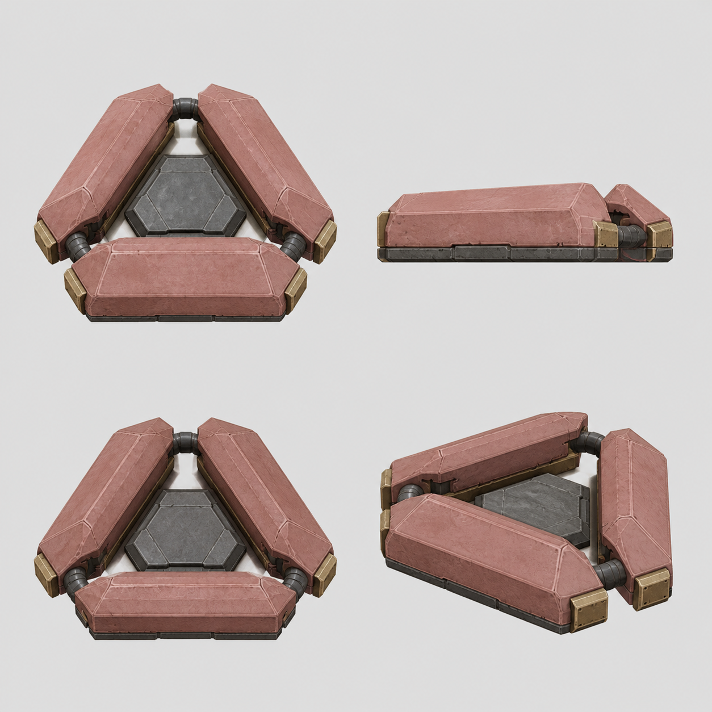

Minesmith · Trip Node
Broken-triangle route trap
Three broad clamp jaws and a large open centre replace the round puck. The resting model has no gun, eye, dome, spike tell, or team paint.
0.44 tile targetvery lowmatte pale clay48 px checked